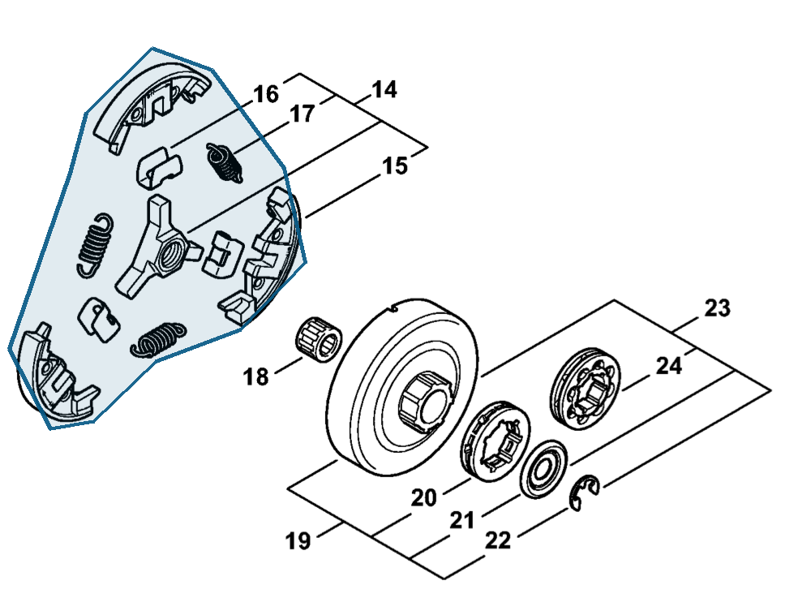

Clutch
1142 160 2000
MS 462 — clutch
Assembly includes items 15–17.
Item 14 Qty listed: 1

MS 462 C-M Z spare-parts list, 10/29/2024. Drawing p. 13; parts table p. 14.
Suggest a correctionGitHub · sign-in required
1142 160 2000
Assembly includes items 15–17.
Item 14 Qty listed: 1

MS 462 C-M Z spare-parts list, 10/29/2024. Drawing p. 13; parts table p. 14.
Suggest a correctionGitHub · sign-in required